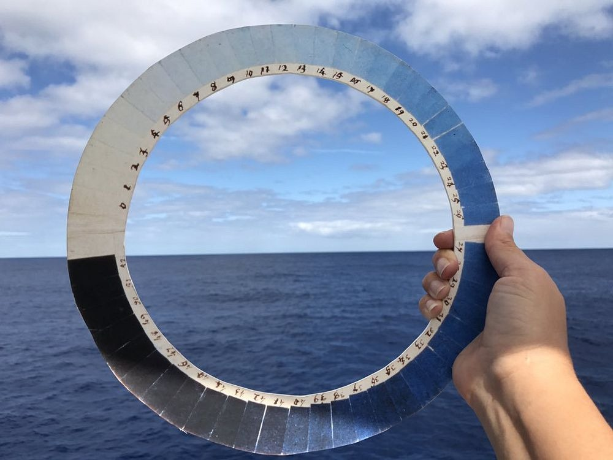
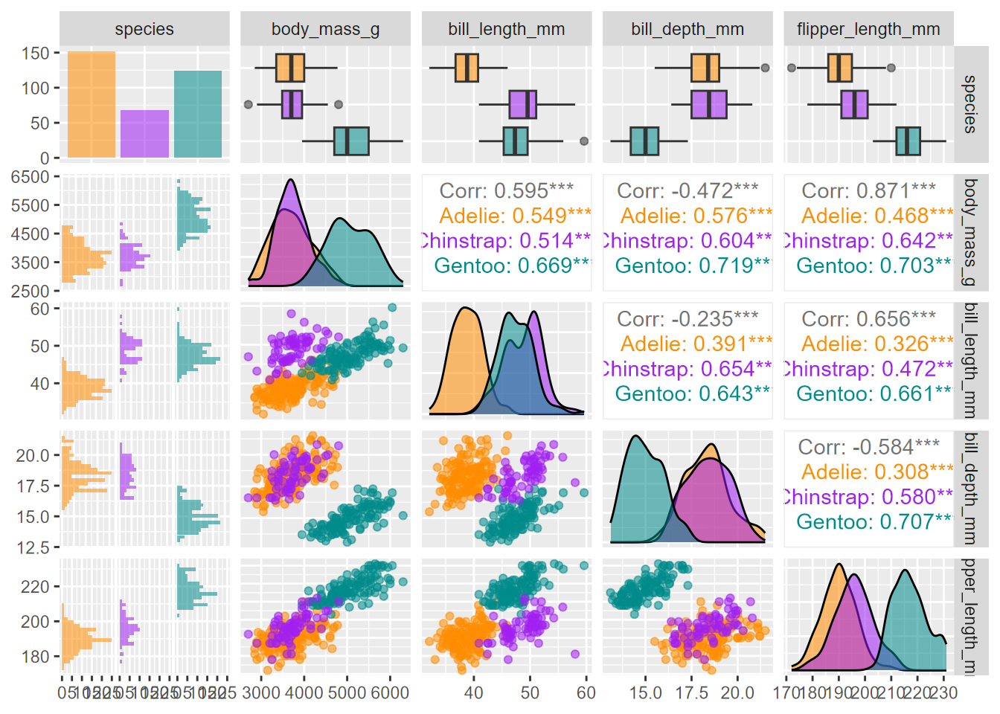
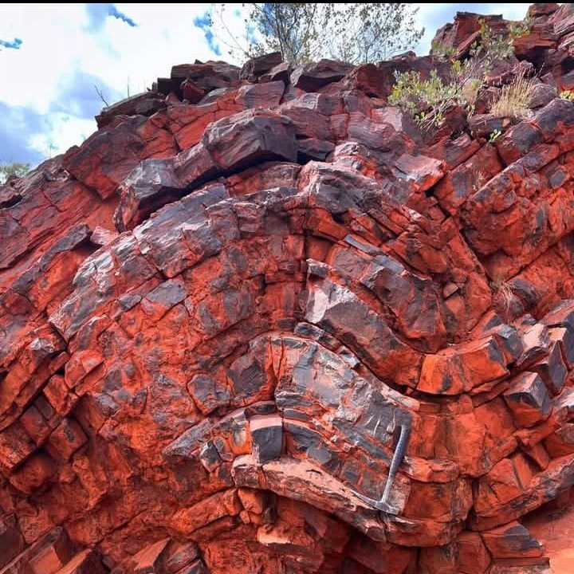
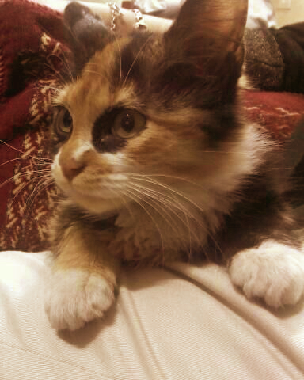
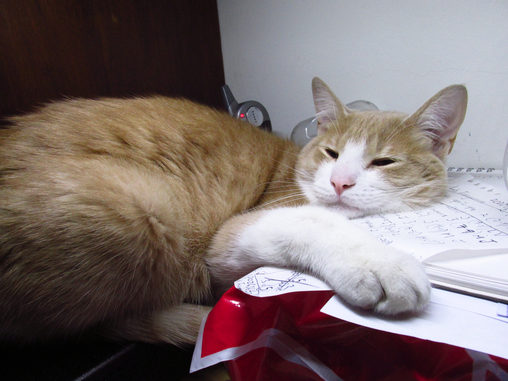

Sólo un tonto busca la lógica en los recovecos del corazón humano
Matematics. Rightly viewed. Possesses not only truth. But supreme beauty - A BEAUTY COLD AND AUSTERE. Without the gorgeous trappings of painting or music.
Peliculas

3 Idiots (2009): Esta pelicula me sorprendio mucho, creo que podría ser la mejor pelicula que he visto en la vida?. Es de la india, tiene muchas canciónes como si fuera un musical, eso de pronto no me gustó tanto, pero así es la india. SE reunen los parceros de la universidad despues de mucho tiempo para ver a quien le va mejor, y para encontrarse con un parcero que adoran pero que no saben hace mucho tiempo donde se ha metido.
Hombre Irracional (2015): Está Emma Stone y Joaquin Phoenix, actores que suelen aparecer en peliculas cheveres, y esta es unaaaa. Una muchacha que se enamora de su profesor de filosofía, hasta que este man hace algo turbio, ¿o no tan turbio?. LA VERDAD yo estoy de acuerdo con lo que hizo, pero yo soy alguien muy cínico.
Hector en busca de la felicidad (2014): ABurrido de la vida, que me veo me veo facilmente aburrido como Hector, hace un viaje para encontrar la felicidad.
Mas extraño que la ficcion (2006): Vas por la vida y de repente escuchas que alguien va narrando lo que haces. Resulta que ahora eres parte de una historía.
Amelie (2001): Es simplemente encantadora, una mesera que decide hacer buenas acciones
Stand by me (1986): Un amigo del colegio llega re emocionado porque escuchó que en las vias del tren hay unn cadaver que pueden ir a mirar. Entonces? pues la aventura a ver el cadaver.
Big Fish (2003): EL protagonista es alguien desesperadamente optimista, es una historia de fantasía. ME gusto tanto tanto. SI viera la vida un poco más seguido con ese optimismo, estoy seguro que todo sería mucho mejorcito
Good Will Hunting (1997): Ben AFleck y Matt Damon escribieron esta historia cuando aún no eran tan reconocidos. Es algo así como la canción que habla sobre los genios que podrían estar perdidos y que se mueren sin saber. Este es un muchacho que aunque es un genio es simplemente un idiota sin aspiraciónes que no aprovecha lo que tiene.
ATrapame si puedes (2002): La historia real de uno de los más grandes falsificadores de la historia. Es muy divertida, es excelenteeeee, es que el man finje incluso ser piloto de avión.
Little Death (2014): UNa pelicula sobre "la pequeña muerte" que es como los franceses se refieren al orgasmo. Trata de una manera muy genial los diferentes fetiches de un puñado de personas en una ciudad.
Bad Words (2013): Este tipo de alguna forma logra hacer trampa para meterse en concursos de deletreo para niños, pero es una gonorreita graciosa que uno termina queriendo.
Libros
 En busca de Klingsor : Sin duda, de mis libros favoritos del mundo. "(...) científico en la guerra: En medio de la refriega, se dio cuenta de que, si no quería morir, debía dejar de pensar en todo aquello. Ahora no importaba la ciencia ni el recuento de probabilidades: la teoría era una basura que sólo les servía a los hombres que, pulcramente sentados en sus escritorios, analizaban los actos de los demás sin haberse enfrentado nunca a una batalla real." El Libro De Los Seres Imaginarios : Deidades, personajes antropomorfos, conceptos. En muchas de las histórias que ha inventado el humano para entender el mundo, hay cosas bellisimas, es maravilloso que se tenga tanta imaginación, dudo que hoy en día los adultos tengan tanta imaginación como quienes inventaron estos seres. Una recopilación de seres imaginarios y sus historias. Me encanta. "Ignoramos el sentido del dragón, como ignoramos el sentido del universo, pero algo hay en su
imagen que concuerda con la imaginación de los hombres, y así el dragón surge en distintas
latitudes y edades." El retrato de Dorian Gray : Uno de los autores que más me gustan es Oscar Wilde, y me gusta porque a diferencia de casi todos, no cuestiona ni se lamenta tanto por la existencia, y se preocupa más por como disfrutarla, habla del placer, del amor, de la amistad, de la belleza de la vida, y aunque una persona como Dorian Gray realmente en realidad podría ser insoportable, pienso que deberiamos poder disfrutar la vida y los placeres como lo hacía él, no deberiamos temer al amor, no deberiamos temer a caer, a equivocarnos, no deberiamos estar dando vueltas sobre tonterias como un corazón roto, cuando la vida continua y las emociones pueden volverse a sentir y deberian de volverse a sentir sin temor. "En los días que corren, la gente sabe el precio de todo y el valor de nada" "Amar en secreto es lo único que hace a la vida misteriosa y sorprendente." "Todo lo que deseo es mirar a la vida, puede venir a mirarla conmigo, si quiere" "Cuando somos felices siempre somos buenos, pero cuando somos buenos no siempre somos felices" El quijote de la mancha : Amo. Locura y libertad. Es un libro sobre la libertad. "Desocupado lector: sin juramento me podrás creer que quisiera que este libro, como hijo del entendimiento,
fuera el más hermoso, el más gallardo y más discreto que pudiera imaginarse. Pero no he podido yo
contravenir al orden de naturaleza; que en ella cada cosa engendra su semejante." La divina comedia - Dante : "A mitad del camino de la vida,
en una selva oscura me encontraba
porque mi ruta había extraviado." La elegancia del erizo : Lo extraordinario en lo ordinario. Una pequeña niña francesa decide suicidarse y quemar toda su casa, pero antes de hacerlo le da la oportunidad a la vida que le demuestre que es bella. Nada. Janne Teller : Hace mucho no leia algo que me hiciera cuestionar el sentido de la vida, la mayoria de libros son pesimos cuando tratan el tema, este lo trata desde la inocencia. La vida sin embargo sigue sin tener sentido, pero eso no es algo malo. "Pierre Anthon dejó la escuela el día que descubrió que no merecía la pena hacer nada puesto que nada tenía sentido. Los demás nos quedamos."" Eraze una vez el amor pero tuve que matarlo : Punk. Raya, raya mucho. El amor es violento, es estúpido. Habla mucho de la história de "amor" de Sid Vicious (SEX PISTOLS) y Nancy, tan violenta, tan estúpida, el amor es estupído, ¿si era amor eso? no se cómo pero estoy seguro que sí. "Hay tres reglas: 1. Siempre hay una víctima. 2. Trata de no ser tú. 3. No olvides la segunda regla" Los dialogos con el señor platano : Bien corta, escritura absurda, divertida, muy absurda, a veces me pregunto porque me gusta tanto, me da PENA recomendarla, pero es en parte el absurdo que tengo dentro de mí, y si les parece estúpido el libro, es porque no ven más de la superficie, hay una filosofía detras, una filosofía estúpida y barata, pero he visto a gente estúpida ser mucho más feliz que yo. “Yo amo las vacas y las amo porque son sabias, no
las amo por su leche ni por su carne, las amo porque
saben el gran secreto de la vida y no les importa
saberlo." La cuchara menguante : Hermosa, histórias de amor, locura y el mundo alrededor de la tabla periodica de los elementos. Todo es real, todo pasó, nada es ficticio, es una recopilación de histórias, se aprende mucho. Ojalá fuera una lectura obligatoria para todos. "No soy tan necio como para predecir que la biología del silicio sea imposible, pero a
no ser que esas criaturas defequen arena y vivan en planetas con volcanes que
continuamente escupen sílice ultramicroscópico, lo más probable es que este
elemento no esté a la altura de la tarea de construir la vida." Técnicas de masturbación entre Batman y Robin : Explora el amor, trata de hacerlo, explora la sexualidad del hombre y la mujer, o trata de hacerlo. Es entretenida, o trata de serlo. "Amor y sexo tienen en común el ser causas individuales,
cualquier intento de compartir esas sensaciones con algún
otro está condenado al fracaso y sólo despertará en nosotros
ira y desazón." El robo del elefante blanco : Mark Twain es un autor increible, me gusta mucho, muchísimo. Esta es solo una de sus buenas histórias. "Una persona con la cual trabé amistad circunstancialmente en el tren, me contó la extraña historia
que relataré a continuación. Quien la contaba era un
caballero de más de setenta años de edad y su rostro
bondadoso y amable y aire grave y sincero, ponían
la inconfundible marca de la verdad sobre cada ma-
nifestación que salía de sus labios. Dijo..." Verónica decide morir : ""Veronika es una joven que tiene los mismos sueños y deseos que cualquier persona de su edad. Es guapa, cuenta con un buen trabajo y no le faltan pretendientes. Su vida
transcurre sin mayores sobresaltos, sin grandes alegrías ni grandes tristezas. Pero
Veronika no es feliz. Por eso, la mañana del 11 de noviembre de 1997, Veronika decide
morir." Paulo Coelho me desespera, no se si me gusta o no, aquí hay algo que me gustó, he conocido a muchas Verónicas, ¿porque es tan dificil, para cientos de personas afortunadas en la vida realmente, ser feliz ahora? La melancólica muerte del chico ostra : De esos libros que son lindos, sencillos.
En busca de Klingsor : Sin duda, de mis libros favoritos del mundo. "(...) científico en la guerra: En medio de la refriega, se dio cuenta de que, si no quería morir, debía dejar de pensar en todo aquello. Ahora no importaba la ciencia ni el recuento de probabilidades: la teoría era una basura que sólo les servía a los hombres que, pulcramente sentados en sus escritorios, analizaban los actos de los demás sin haberse enfrentado nunca a una batalla real." El Libro De Los Seres Imaginarios : Deidades, personajes antropomorfos, conceptos. En muchas de las histórias que ha inventado el humano para entender el mundo, hay cosas bellisimas, es maravilloso que se tenga tanta imaginación, dudo que hoy en día los adultos tengan tanta imaginación como quienes inventaron estos seres. Una recopilación de seres imaginarios y sus historias. Me encanta. "Ignoramos el sentido del dragón, como ignoramos el sentido del universo, pero algo hay en su
imagen que concuerda con la imaginación de los hombres, y así el dragón surge en distintas
latitudes y edades." El retrato de Dorian Gray : Uno de los autores que más me gustan es Oscar Wilde, y me gusta porque a diferencia de casi todos, no cuestiona ni se lamenta tanto por la existencia, y se preocupa más por como disfrutarla, habla del placer, del amor, de la amistad, de la belleza de la vida, y aunque una persona como Dorian Gray realmente en realidad podría ser insoportable, pienso que deberiamos poder disfrutar la vida y los placeres como lo hacía él, no deberiamos temer al amor, no deberiamos temer a caer, a equivocarnos, no deberiamos estar dando vueltas sobre tonterias como un corazón roto, cuando la vida continua y las emociones pueden volverse a sentir y deberian de volverse a sentir sin temor. "En los días que corren, la gente sabe el precio de todo y el valor de nada" "Amar en secreto es lo único que hace a la vida misteriosa y sorprendente." "Todo lo que deseo es mirar a la vida, puede venir a mirarla conmigo, si quiere" "Cuando somos felices siempre somos buenos, pero cuando somos buenos no siempre somos felices" El quijote de la mancha : Amo. Locura y libertad. Es un libro sobre la libertad. "Desocupado lector: sin juramento me podrás creer que quisiera que este libro, como hijo del entendimiento,
fuera el más hermoso, el más gallardo y más discreto que pudiera imaginarse. Pero no he podido yo
contravenir al orden de naturaleza; que en ella cada cosa engendra su semejante." La divina comedia - Dante : "A mitad del camino de la vida,
en una selva oscura me encontraba
porque mi ruta había extraviado." La elegancia del erizo : Lo extraordinario en lo ordinario. Una pequeña niña francesa decide suicidarse y quemar toda su casa, pero antes de hacerlo le da la oportunidad a la vida que le demuestre que es bella. Nada. Janne Teller : Hace mucho no leia algo que me hiciera cuestionar el sentido de la vida, la mayoria de libros son pesimos cuando tratan el tema, este lo trata desde la inocencia. La vida sin embargo sigue sin tener sentido, pero eso no es algo malo. "Pierre Anthon dejó la escuela el día que descubrió que no merecía la pena hacer nada puesto que nada tenía sentido. Los demás nos quedamos."" Eraze una vez el amor pero tuve que matarlo : Punk. Raya, raya mucho. El amor es violento, es estúpido. Habla mucho de la história de "amor" de Sid Vicious (SEX PISTOLS) y Nancy, tan violenta, tan estúpida, el amor es estupído, ¿si era amor eso? no se cómo pero estoy seguro que sí. "Hay tres reglas: 1. Siempre hay una víctima. 2. Trata de no ser tú. 3. No olvides la segunda regla" Los dialogos con el señor platano : Bien corta, escritura absurda, divertida, muy absurda, a veces me pregunto porque me gusta tanto, me da PENA recomendarla, pero es en parte el absurdo que tengo dentro de mí, y si les parece estúpido el libro, es porque no ven más de la superficie, hay una filosofía detras, una filosofía estúpida y barata, pero he visto a gente estúpida ser mucho más feliz que yo. “Yo amo las vacas y las amo porque son sabias, no
las amo por su leche ni por su carne, las amo porque
saben el gran secreto de la vida y no les importa
saberlo." La cuchara menguante : Hermosa, histórias de amor, locura y el mundo alrededor de la tabla periodica de los elementos. Todo es real, todo pasó, nada es ficticio, es una recopilación de histórias, se aprende mucho. Ojalá fuera una lectura obligatoria para todos. "No soy tan necio como para predecir que la biología del silicio sea imposible, pero a
no ser que esas criaturas defequen arena y vivan en planetas con volcanes que
continuamente escupen sílice ultramicroscópico, lo más probable es que este
elemento no esté a la altura de la tarea de construir la vida." Técnicas de masturbación entre Batman y Robin : Explora el amor, trata de hacerlo, explora la sexualidad del hombre y la mujer, o trata de hacerlo. Es entretenida, o trata de serlo. "Amor y sexo tienen en común el ser causas individuales,
cualquier intento de compartir esas sensaciones con algún
otro está condenado al fracaso y sólo despertará en nosotros
ira y desazón." El robo del elefante blanco : Mark Twain es un autor increible, me gusta mucho, muchísimo. Esta es solo una de sus buenas histórias. "Una persona con la cual trabé amistad circunstancialmente en el tren, me contó la extraña historia
que relataré a continuación. Quien la contaba era un
caballero de más de setenta años de edad y su rostro
bondadoso y amable y aire grave y sincero, ponían
la inconfundible marca de la verdad sobre cada ma-
nifestación que salía de sus labios. Dijo..." Verónica decide morir : ""Veronika es una joven que tiene los mismos sueños y deseos que cualquier persona de su edad. Es guapa, cuenta con un buen trabajo y no le faltan pretendientes. Su vida
transcurre sin mayores sobresaltos, sin grandes alegrías ni grandes tristezas. Pero
Veronika no es feliz. Por eso, la mañana del 11 de noviembre de 1997, Veronika decide
morir." Paulo Coelho me desespera, no se si me gusta o no, aquí hay algo que me gustó, he conocido a muchas Verónicas, ¿porque es tan dificil, para cientos de personas afortunadas en la vida realmente, ser feliz ahora? La melancólica muerte del chico ostra : De esos libros que son lindos, sencillos. 
Libros Handbooks
Cuidado de animales vivos GUÍA_practica Colombia Acceso a los recursos biológicos, los recursos genéticos y/o sus productos derivados, y el componente intangible Handbook Catalago de Plantas 1 Handbook Catalogo de Plantas 2 Canciones
Vil Malparido.Tiempo al tiempo. Tus besos ya no me daban razones de peso.
Si me voy.
Tartamudo.
Vampi.
Fluorcent adolecent en español jajajja en que estaba pensado? soy un tonto cuando me gusta alguien
Bicho.
Enamorado tuyo.
Sincericidio.
Montón de palabras al azar.
Bésame sin sentir.
La tristesa del electrón.
Cuando duermes.
Flor en la luna.
Lady Blue.
Dinosaurio azul.
Me gustas tanto.
Loco tu forma de ser.
Cianuro.
Masmelo.
Follow you into the dark.
No hay más que hacer.
Montón.
Rueda mágica.
Mari.
Quasar.
Varios

Imagen reconstrucción del virus del VIH teniendo en cuenta la estructura 3D de las proteinas que la forman. Colores arbitrarios para efectos artisticos. Beautifully dangerous.
Stop motion. Flores, floreciendo.

Líquidez de las rocas. Obviamente eso era plano, y se fue doblando, muy lentamente, mucho muy lentamente, tal vez despues de millones y millones de años de constante presión.

Ecuación de una reacción, tal vez faltan muchos muchos pasos. La idea que de tener una caja llena de hidrógeno lo suficientemente grande, despues de mucho tiempo, podría aparecer algo como nosotros. El hidrógeno forma estrellas, las estrellas sintetizan otros elementos, las estrellas explotan, los nuevos elementos se dispersan por el espacio, algún planeta tiene una buena concentración y variedad de ellos, algo de mágia ocurre para que se formen aminoácidos, proteinas, enzimas, azucares, mucha suerte, mucha magia, aún más para que se organizen y creen cosas que buscan reproducirse, comer, hasta de pronto, que buscan amor y conocer el universo.

.jpg)
Mandy.

.jpg)
Maracuya.
Obsesionado con medir los fenómenos meteorológicos que lo rodeaban durante sus excursiones por las montañas europeas, Saussure (1740-1799) —geólogo, meteorólogo y alpinista suizo— inventó y mejoró varios instrumentos como el magnetómetro y el hermosamente nombrado diafanómetro, instrumento para medir la claridad de la atmósfera. En 1789, tras registrar sistemáticamente los tonos de azul en el cielo durante años, el científico desarrolló el cianómetro, un artefacto simple con forma circular que tiene 52 distintos tonos de azul (pedazos de papel teñidos por el meteorólogo con un pigmento llamado evocativamente “azul prusia”) y que comienza en el blanco y termina en el negro. Tras su invención, el cianómetro cayó pronto en desuso por la poca información propiamente científica que es capaz de dar, algo que dota de poesía a su existencia. Pero la belleza de este artefacto —como la melancolía contenida en los azulísimos cianotipos de algas— radica en su invitación a apreciar aquello que, por su sutileza, no siempre notamos, a absorber la información del espacio que habitamos y que es capaz de descubrirnos universos tan simbólicos como emocionales.

Alguien dedico buena parte de su vida a fotografiar alas de mariposas hasta encontrar en ellas cada una de las letras y números del alfabeto. No es una cuestión de señales, ni siquiera de un diseño con propósito, el patrón en los colores de las mariposas, incluso en el pelaje de muchos animales, sigue ciertas reglas, un algoritmo, que despues de muchas muchas iteraciones puede llevar a veces a producir cosas muy familiares para nosotros los humanos. Lamentablemente no conozco el nombre de la persona para darle crédito. Me parece una forma hermosa de haber pasado el tiempo, o quien sabe, de pronto de haber pasado toda una vida, mirando, fotografiando, contemplando, compartiendo.
.jpg)
Masmelo.

Birrefringencia. Materiales o mezclas con dobles indices de refracción, hacen que la luz se divida dentro de ellos y como tienen distintos indices de refracción en su interior, viajen a diferentes velocidades, separando la luz. Son materiales anisótropos, sus propiedades son diferentes según la dirección en la que se esten midiendo. La birrefringencia es usada para la microscopía de luz polarizada en medicina, Natalia cree que este wallpaper que una vez encontré, es la tinción birrefringente de algún cultivo de células. Es hermoso, yo pienso que son bombas de jabón.

Este era mi grafity favorito en todo Bogotá. En la calle 26 con cra 20 más o menos, al frente del cementerio. Ya no exíste, han pintado otro encima.
Osito de agua. Tardigrado. La criatura más resistente del planeta, se cree por ello que podría haber provenido del espacio. Miden poco menos de 1mm de largo. Sobreviven temperaturas extremas, presiones extremas (incluyendo el vacio del espacio), radiación elevada, falta de agua. Una curiosa historia sobre tardigrados en la luna: 22 de febrero de 2019, la sonda espacial Beresheet, construida por SpaceIL e Israel Aerospace Industries, entró en la órbita de la Luna. Beresheet iba a ser la primera nave espacial privada en realizar un aterrizaje suave sobre la superficie lunar. Entre la carga útil de la sonda había miles de tardígrados. De camino a la Luna, la nave había viajado a gran velocidad y era necesario frenarla para que el aterrizaje fuera suave. Desgraciadamente, durante la maniobra de frenado falló un giroscopio, bloqueando el motor primario. A 150 m de altura, Beresheet seguía moviéndose a 500 km/h, demasiado deprisa para detenerse a tiempo. El impacto fue violento: la sonda se hizo añicos y sus restos quedaron esparcidos. ¿Qué ocurrió con los tardígrados que viajaban en la sonda? Dada su extraordinaria capacidad para sobrevivir a situaciones que matarían a casi cualquier otro animal, ¿podrían haber contaminado la Luna? ¿podrían reproducirse y colonizarla?
BOAchem: Beauty Of Analytics & Chemistry | Juntos en la ciencia.
Bogotá D.C., Colombia | Mosquera Planadas, Colombia
¡Contáctanos!
E-mail: comercial@boachem.com
WhatsApp/Teléfono: (+57) 316 6626 025
Solo WhatsApp: (+57) 320 339 3083